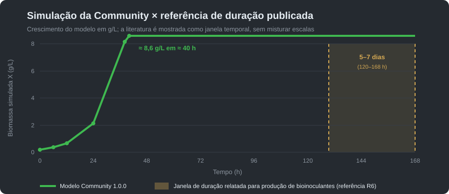

Bradyrhizobium japonicum é o organismo da Community. Na soja, a espécie entra na fixação biológica de nitrogênio. Na tela, entra como crescimento aeróbio em substrato carbonado.
Esta documentação foi alinhada à Community 1.1.0. A release bioreator-1.1.0 está sendo preparada; consulte a página de download para os arquivos e o estado dos links.
A versão 1.0.0 integrava uma batelada em tanque agitado com Monod e balanço de oxigênio. A Community 1.1.0 incorpora também fatores configurados de oxigênio, temperatura, pH e lag; seu modelo e parâmetros atuais estão na seção seguinte.
μ = μmax · S / (Ks + S)
dX/dt = μ · X
dS/dt = −μ · X / Yxs
dCL/dt = kLa · (CL* − CL) − qO2 · 1000 · X
Estas equações são referências históricas da versão 1.0.0. São modelos de balanço e cinética, não validação de uma cultura industrial.
| Parâmetro | Valor | Unidade | Referência/base |
|---|---|---|---|
| μmax | 0,10 | h⁻¹ | Parâmetro demonstrativo fixado na release 1.0.0 [R5]; a forma de Monod é descrita em [R1, R2]. Não é estimativa experimental de uma cepa. |
| Ks | 0,25 | g/L | Parâmetro demonstrativo da release 1.0.0 [R5]; a interpretação da constante de meia saturação segue [R1, R2]. |
| Yx/s | 0,42 | gX/gS | Rendimento imposto pelo balanço do simulador [R5]; métodos e dependência do meio são discutidos em [R2, R3]. |
| qO₂ | 0,12 | gO₂/(gX·h) | Consumo específico fixo no simulador [R5], não medido pelo programa; o balanço de oxigênio é apresentado em [R2, R3]. |
| CL* | 7,8 | mg/L | Saturação de referência da carga de exemplo na release 1.0.0 [R5]; varia com condições físicas e meio. |
| kLa | 0,026 · (P/V)0,4 · us0,5 | s⁻¹; P/V em W/m³, us em m/s | Correlação empírica para sistema coalescente de van’t Riet [R4], aplicada pelo simulador [R5]. |
| Carga de referência | 100 L nominal; 75% útil; 1 vvm; 400 rpm; 28 °C; pH 6,75; X₀ 0,20; S₀ 20 | L; %; vvm; rpm; °C; pH; g/L; g/L | Condições de demonstração da release 1.0.0 [R5], não protocolo de cultivo recomendado. |
A literatura de engenharia [R2, R3] fundamenta as equações e as definições. Ela não é a fonte experimental dos valores μmax, Ks, Yx/s e qO₂ escolhidos para esta simulação. Resultados de crescimento de Bradyrhizobium japonicum dependem de cepa, meio e condições; ver [R6–R8].
A versão acrescenta fatores de limitação por oxigênio, temperatura e pH, uma fase lag e decaimento celular. A cinética do perfil de B. japonicum fica:
μ = μmax · S/(Ks + S) · DO/(KO + DO) · fT(T) · fPH(pH)1,25 · [1 − exp(−t/8 h)]
dX/dt = μ · X − kd · X; dS/dt = −μ · X / Yx/s
qO₂ = μ / Yx/o + mo; OUR = qO₂ · X
| Parâmetro/configuração | Valor 1.1.0 | Unidade | Origem e limite |
|---|---|---|---|
| μmax; Ks; Yx/s | 0,05; 0,25; 0,42 | h⁻¹; g/L; gX/gS | Valores fixos do perfil 1.1.0 [R11]; as formas de Monod e do balanço seguem [R1–R3]. Não são medições de uma cepa. |
| KO | 0,15 | mg O₂/L | Constante demonstrativa de limitação por oxigênio do perfil [R11]; estrutura de saturação discutida em [R2, R3]. |
| Yx/o; mo | 1,1; 0,007 | gX/gO₂; gO₂/(gX·h) | Parâmetros de manutenção/respiração configurados no perfil [R11]; a relação de Pirt é [R9]. |
| Temperatura mínima; ótima; máxima | 10; 28; 37 | °C | Pontos cardinais da função do perfil [R11]; forma cardinal fundamentada em [R10]. |
| pH mínimo; ótimo; máximo; expoente | 4,5; 6,8; 9,0; 1,25 | adimensional | Pontos e expoente configurados no perfil 1.1.0 [R11]; modelo cardinal de referência [R10]. |
| Lag; decaimento kd | 8; 0,003 | h; h⁻¹ | Parâmetros didáticos do perfil 1.1.0 [R11], não ajustados a dados experimentais publicados. |
| Conversão configurada para UFC | 2,0 × 10⁹ | UFC/mL por g/L de X | Fator de conversão do perfil [R11]. É uma estimativa do software, não uma contagem de células viáveis. |
| Carga inicial do perfil | X₀ = 0,03; S₀ = 10 | g/L; g/L | Setpoints demonstrativos da versão 1.1.0 [R11]; tanque de 100 L, 75 L úteis, 1 vvm, 400 rpm, 28 °C e pH 6,8. |
| Transferência de oxigênio | kLa ≈ 116,8 | h⁻¹ | Estimativa da geometria e setpoints da carga 1.1.0 [R11], usando a correlação de van’t Riet [R4]. A potência aerada é reduzida pelo fator implementado de 0,5. |
Os fatores de temperatura e pH são funções cardinais do software; o fator de pH é elevado ao expoente 1,25. A biomassa formada consome substrato pelo rendimento Yx/s e, em seguida, o decaimento é aplicado à biomassa. A batelada encerra automaticamente quando S ≤ 0,001 g/L. Nenhum desses parâmetros deve ser tratado como recomendação de cultivo nem como validação experimental.
A versão 1.1.0 termina a carga de referência em 122,6 h (5,1 dias), com X ≈ 3,913 g/L e conversão calculada ≈ 7,83 × 109 UFC/mL. O fator configurado não substitui ensaio de viabilidade, calibração por cepa ou validação de processo.
Os números deste parágrafo descrevem especificamente a versão histórica 1.0.0: tanque de 100 L, fração útil de 75%, aeração 1 vvm, agitação 400 rpm, pH 6,75 e partida com 0,20 g/L de biomassa e 20 g/L de substrato.
Na versão histórica 1.0.0, por volta de 40 h o substrato se esgota e a biomassa permanece em 8,6 g/L. pH e temperatura não alteram μ e a hipóxia não reescala o crescimento. A versão 1.1.0 usa outra carga, outra cinética e outros resultados; veja a seção acima.
Em ambas, o kLa é uma estimativa do simulador, não uma medida de planta.

O lote histórico 1.0.0 termina em aproximadamente 40 h, enquanto processos publicados de produção de bioinoculantes podem operar por 5 a 7 dias. A versão 1.1.0 termina em 122,6 h; consulte sua curva no exemplo de batelada. Nenhuma das comparações constitui validação entre sistemas, meios, cepas, escalas ou critérios de colheita equivalentes.
Na 1.1.0, X ≈ 3,91 g/L multiplicado pelo fator configurado (2,0 × 109 UFC/mL por g/L) resulta em cerca de 7,8 × 109 UFC/mL estimadas. É uma conversão do software; nenhuma versão mede UFC nem substitui contagem de viáveis.
O BioReator 4.0 é ferramenta pedagógica e preditiva. A série da tela não é laudo microbiológico, não é garantia comercial de rendimento e não substitui contagem de viáveis, controle de contaminação nem a identidade da cepa.
A 1.1.0 usa parâmetros demonstrativos e não tem validação experimental publicada; não modela contaminação nem mede viabilidade em laboratório. Como nos demais modelos, a cinética configurada não deve ser tratada como protocolo de cultivo.
Qualquer referência a uma versão paga descreve um plano para 2027, não uma função disponível nesta release.
Ver o exemplo publicado · Manual técnico do tanque · Material para professores